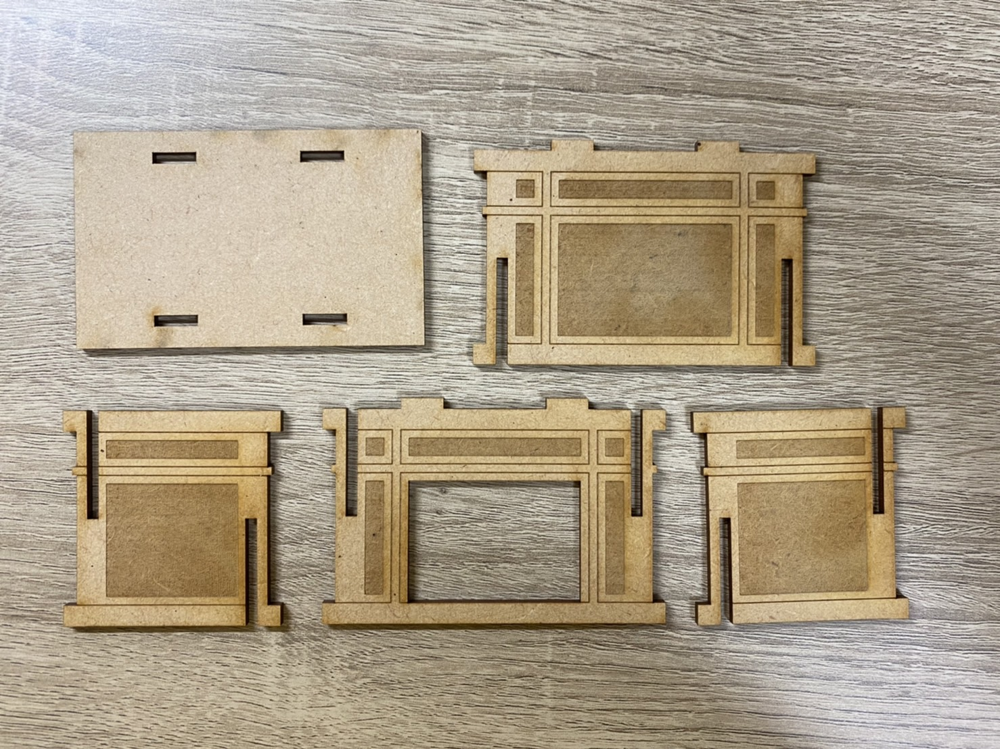

レーザーカッティング
作品タイトル：暖炉
構造スケッチ
設計ファイル
作品


作品の説明
冬も近いので暖かさを感じられるように暖炉を作ってみました。
中にキャンドルなどを入れるとみているだけで温かい気持ちになれます。
なぜこの作品を作ろうと思ったか
私がこの作品を作ろうと思った理由はイルミネーションなどの
光るものが私的にはとても目を惹かれるものだと感じたので
暖炉の中に光を灯せば人の心を動かすことができるのではないかと考えたからです。
調べたこと
参考にした暖炉
調べたこと
使用動画
メモ
エラーから適合させる。一般的なものを作るだけではなく新しいものを作ろうというマインドが大切。人それぞれの感じ方が違うのでそれを生かす。